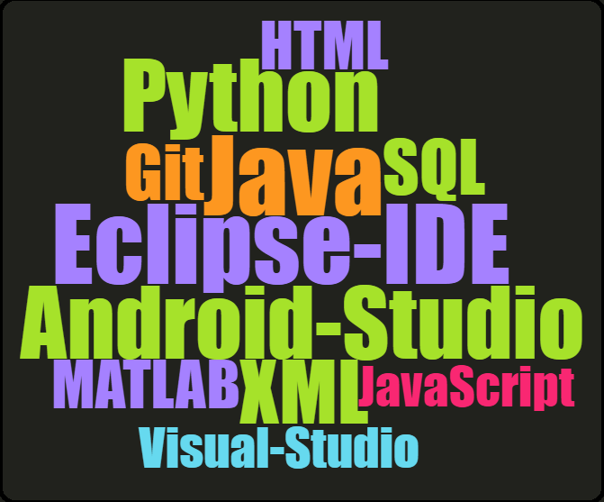
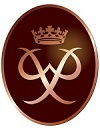

Education
The University of EdinburghM.Sc. Informatics
Sept. 2017 - Sept. 2018 (expected)
Brunel University London
B.Sc. Computer Science with Artificial Intelligence
First Class Honours
Sept. 2012 - June 2016
Year 2: • Algorithms and their Applications • Networks and Operating Systems • Usability Engineering • Software Development and Management • Level 2 Group Project (Database/Android development)
Year 1: • Data and Information • Logic and Computation • Information Systems and Organisations • Introductory Programming • Level 1 Group Project (Robotics)
Year 0: • Mathematical Methods: Algebra • Discrete and Decision Mathematics • Statistics • Introduction to Computing • Introduction to Programming
Languages and Technologies
A word cloud highlighting key skills.
Achievments and awards

Completed The Duke of Edinburgh's bronze award (2008) and silver Award (2009). This involved twelve months voluntary work and a combined ten days of training, hiking and camping. I gained valuable teamwork skills by navigating difficult terrain and reaching checkpoints in a team of four.